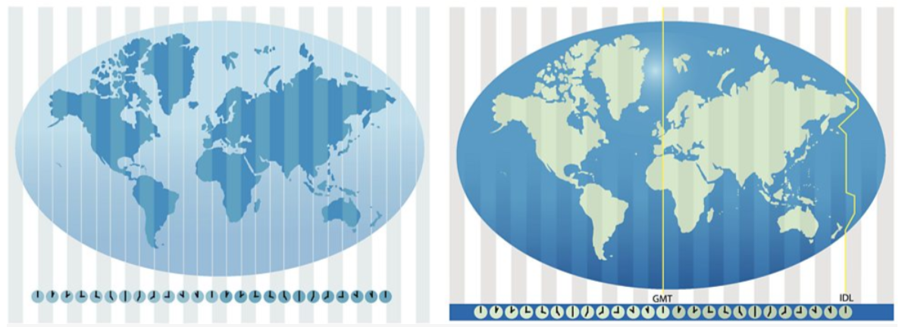

Time zones are regions of the Earth that have the same standard time.
They are primarily based on the longitudinal position of a location relative to the Prime Meridian (0° longitude) in Greenwich, England.
The Earth is divided into 24 time zones, each generally 15 degrees of longitude apart,
corresponding to one hour of time difference from Coordinated Universal Time (UTC).
